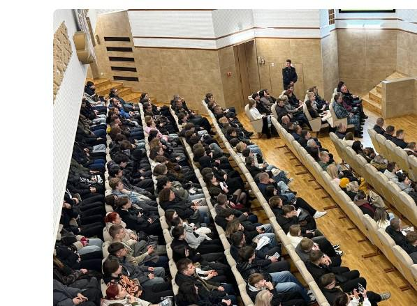
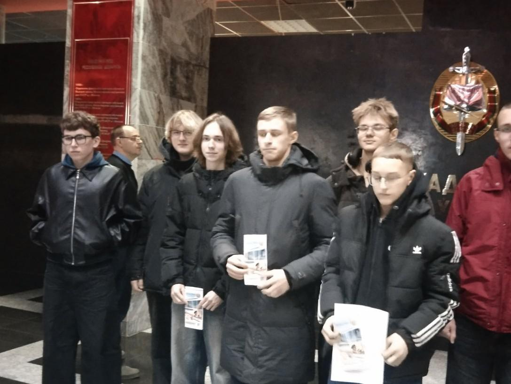
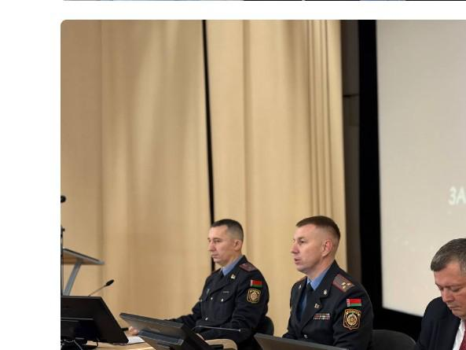
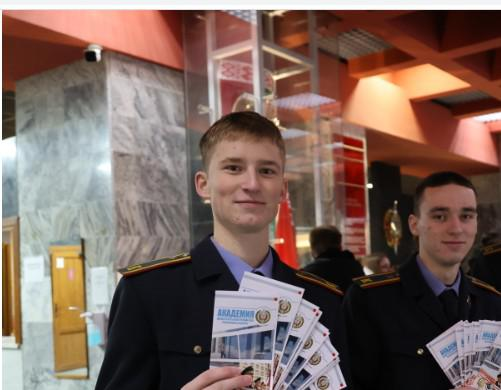

ДЕНЬ ОТКРЫТЫХ ДВЕРЕЙ В АКАДЕМИИ МВД РЕСПУБЛИКИ БЕЛАРУСЬ
15 ноября Академия МВД Республики Беларусь распахнула двери для ребят, которые планируют в дальнейшем связать свою жизнь с правоохранительными органами. От гимназии в Дне открытых дверей принял участие учащийся 11 «Г» класса Антон Левченко.
В ходе мероприятия руководство академии развернуло для будущих абитуриентов многочисленные площадки, раскрывающие повседневную жизнедеятельность курсантов.

Каждая площадка на Дне открытых дверей нашла своего зрителя: на плацу – милицейские службы и подразделения других ведомств, для которых академия готовит кадры, устроили показ спецтехники и демонстрацию подготовки служебных собак, курсанты академии продемонстрировали свои навыки в рукопашном бою. Представители кафедр показали, чему и как обучают курсантов, оборудование кабинетов и аудиторий, тира и спортивных залов, также ребята побывали в академическом общежитии.

На протяжении всего дня ребята имели возможность написать заявления для последующего поступления в академию и институт МВД.

